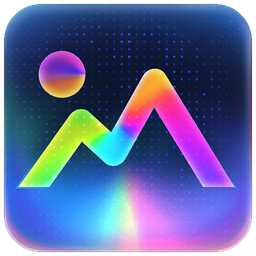

Preview 660 × 400 · fundo BannerAbout-branco.png em cover/center · ícones centralizados

AVIFnim ViewerwindowSize 660×400 · appPosition 200,200 ·
applicationFolderPosition 460,200 · background assets/dmg-background.pngBannerAbout-branco.png (cover, center) e já inclui a seta e
o texto “Arraste para Applications · Drag to Applications”. Os rótulos/ícones são desenhados pelo Finder.